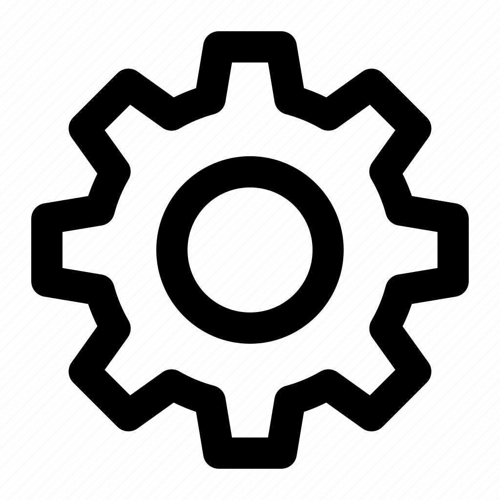
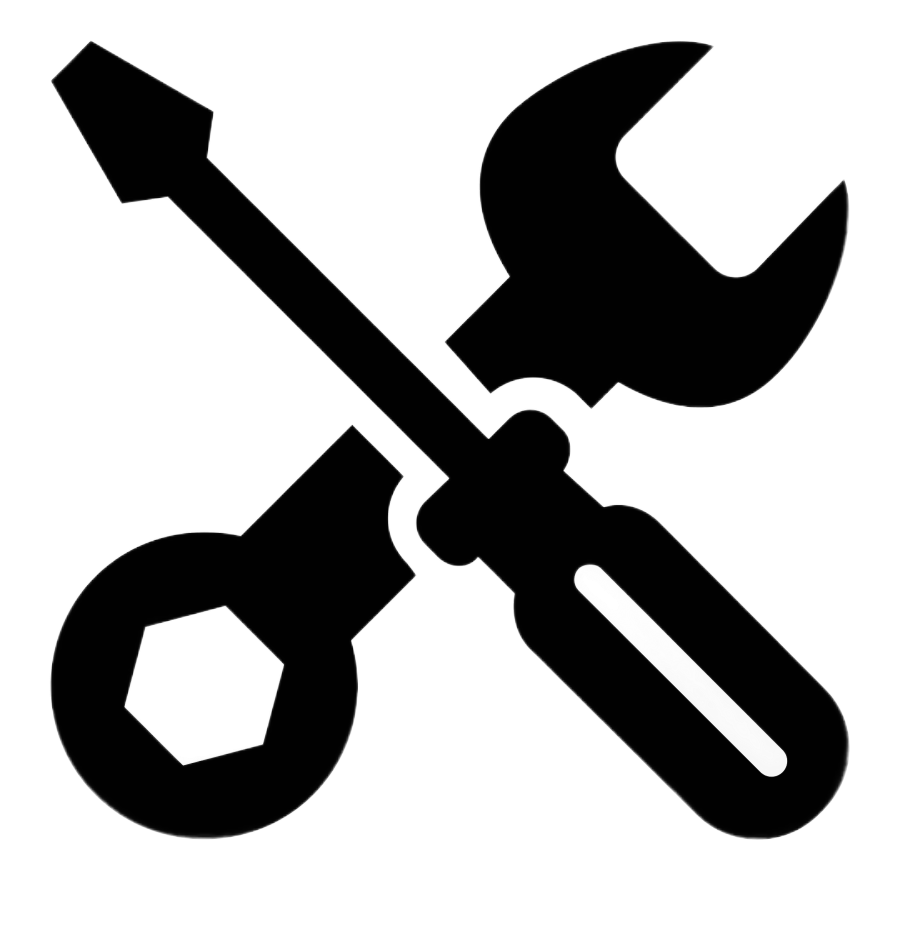
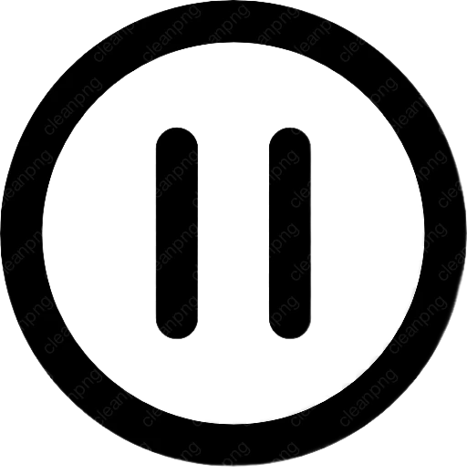

Параметры
Избранное
Сохраненные
волны
Память

Починка
Благодарить
Создателя
V3.0 Je t’aime
Резонанс: 0%
Поиск ближайших радио-сигналов в резонансе, воспроизводиться будут только найденный волны
Настройка Радио.......
Hz
Поиск...
Loading
Поиск новых волн
ENG
РУС
ҚАЗ
0.00 Hz
Hz
MHz
Сейчас играет: Радио отключено, нажмите кнопку чтобы включить

Резонанс: 0%
Поиск ближайших радио-сигналов в резонансе, воспроизводиться будут только найденный волны
Настройка Радио.......
Hz
Поиск...
Loading
55.00
95.00
78.00
112.00
136.00
61.00
202.00
244.00
245.00
256.00
239.00
252.00
25.00
249.00
257.00
301.00
1.00
5.00